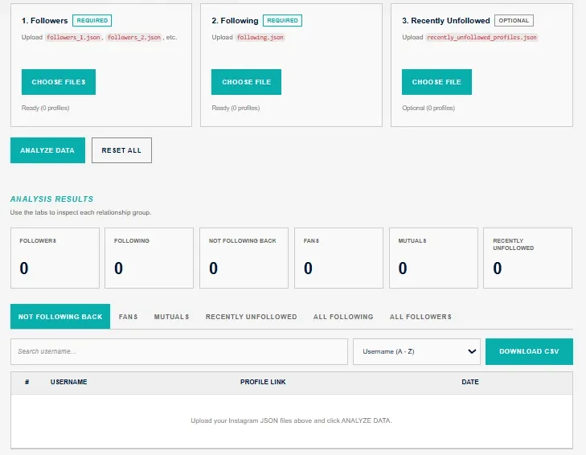
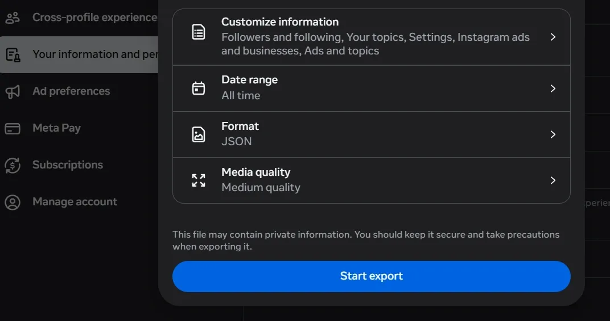
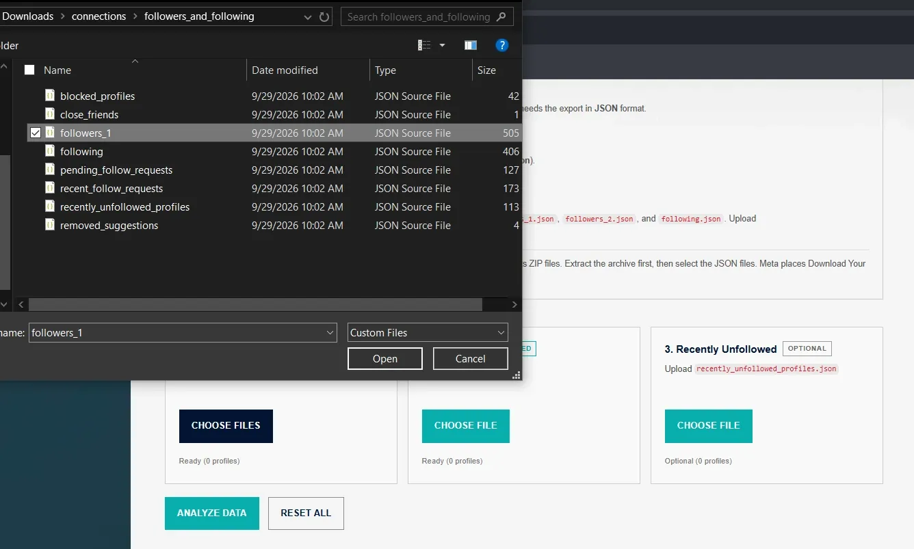
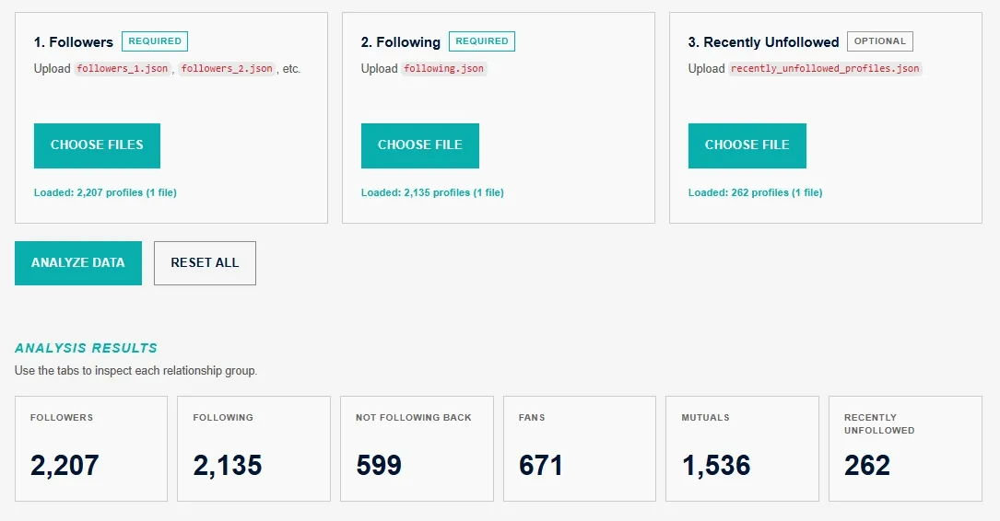
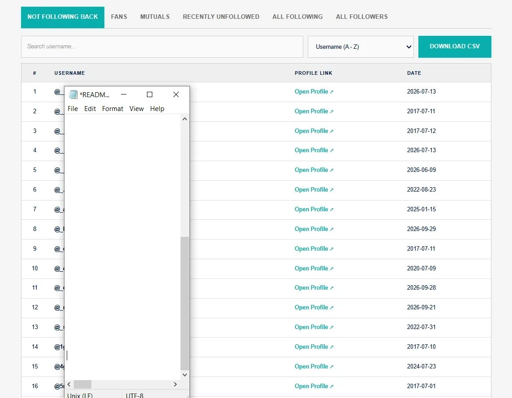
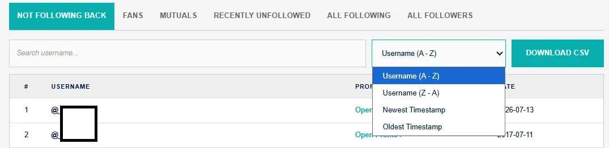
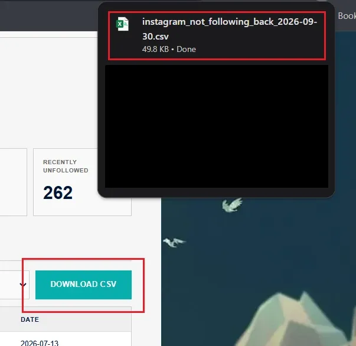
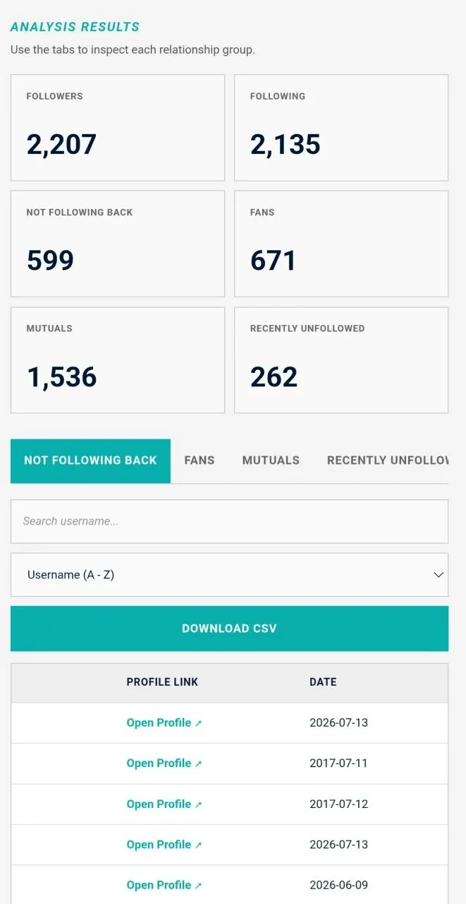

Instagram Follow Analyzer
Instagram Follow Analyzer is a client-side browser utility built to inspect official Instagram account data exports. It parses follower and following lists directly on your device, sorting accounts into practical groups such as non-followers, fans, mutuals, and recently unfollowed profiles.
Project Overview
Most third-party tools that track unfollowers require users to hand over their account credentials or grant risky API permissions. This project takes an alternate route: you download your official account archive directly from Instagram's privacy center, drop the JSON files into the tool, and let your browser handle the math.
The workflow is straightforward: upload your files, let the script compare account sets, inspect the sorted table, search for specific handles, and export the visible records to a clean CSV file whenever needed.
How the Pipeline Works
Request your Instagram account export in JSON format and extract the followers and following files.
The browser reads each file, extracts usernames, timestamps, and profile URLs, then indexes them in JavaScript Maps.
Calculates intersections and differences to group accounts into mutuals, fans, and people not following you back.
Search handles, switch category tabs, sort by date or alphabetical order, and download the active list as a CSV.
Core Features
- Multi-file follower support: Correctly merges follower lists split across multiple files (such as
followers_1.json,followers_2.json, and so on). - Unfollow tracking: Imports
following.jsonas well as optionalrecently_unfollowed_profiles.jsonexports. - Clear relationship buckets: Instantly breaks down mutuals, fans, not-following-back accounts, all followers, all following, and recent unfollows.
- Search and sort: Real-time text search for usernames with one-click alphabetical and timestamp sorting.
- Client-side CSV export: Converts whichever table you are currently viewing into a downloadable CSV file on the fly.
- Zero credentials required: Works strictly with exported data files, keeping your login details safe.
Technology Stack
Semantic structure for upload controls, filters, and tabular results.
Responsive layout with clean card styles and mobile adjustments.
In-memory file reading, JSON parsing, set calculations, filtering, and CSV creation.
Standard export format produced by Meta's account download center.
Screenshots & Interface
Here is a walkthrough of the tool's interface and features:
















Project Details
| Category | Web Tool / Data Analysis |
| Platform | Browser (Client-Side) |
| Stack | HTML, CSS, JavaScript (ES6+), JSON |
| Input | Official Instagram account export files |
| Output | Interactive relationship tables & CSV files |
| Author | Robbi Rizaldi |
Try the Tool or Explore the Code
Launch the live tool in your browser, inspect the source code, or return to the projects showcase: